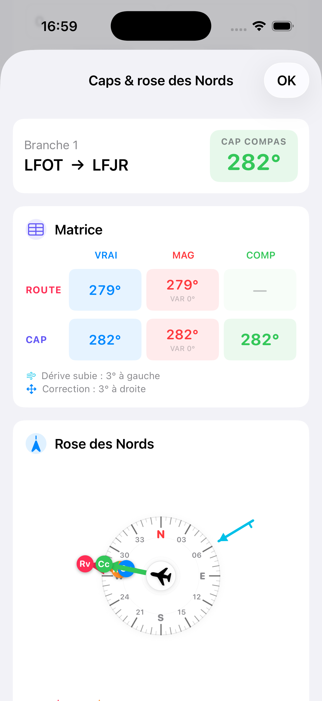
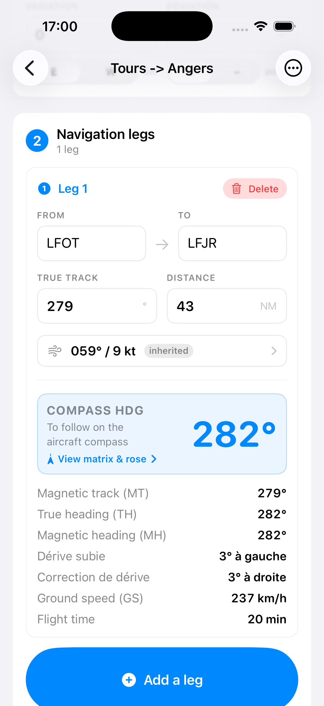
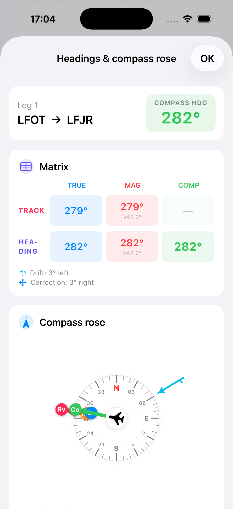

CapRoute
Préparation de navigation VFR — iPhone & iPad VFR flight planning — iPhone & iPad
iOS 17+ · SwiftUI · iCloudUne nav VFR, claire et complète A clear, complete VFR nav
CapRoute calcule la chaîne complète Rv → Rm → Cv → Cm → Cc, la dérive subie, la correction de cap, la vitesse sol et le temps de vol branche par branche, à partir du vent, de la TAS, de la déclinaison magnétique et de la déviation compas.
CapRoute computes the full chain TC → MC → TH → MH → CH, the wind drift, the heading correction, ground speed and time for each leg, from wind, TAS, magnetic variation and compass deviation.
Chaque navigation s'exporte en PDF A4 prêt à imprimer ou à glisser dans un kneeboard, avec rose des Nords, matrice Route/Cap et résultats détaillés.
Every flight exports to a print-ready A4 PDF for your kneeboard, with the compass rose, the Course/Heading matrix and detailed results.
FonctionnalitésFeatures
Rose des NordsCompass rose
Rv, Rm, Cv, Cc, vent et dérive visualisés simultanément. TC, MC, TH, CH, wind and drift visualised together.
Matrice Route/CapCourse/Heading matrix
Toute la chaîne magnétique lisible en un coup d'œil. The full magnetic chain at a glance.
Calcul vent completFull wind solution
WCA, composante face/arrière, GS et temps exacts. WCA, head/tail component, exact GS and time.
Vent par branchePer-leg wind
Chaque branche hérite du vent global ou définit le sien — étiquettes hérité / personnalisé. Each leg inherits the nav-wide wind or defines its own — inherited / custom tags.
Export PDFPDF export
Une page par branche, généré localement, prêt kneeboard. One page per leg, generated locally, kneeboard-ready.
Nav retourReturn flight
Inversion 1-tap : branches retournées, Rv +180°, setup conservé. 1-tap reverse: legs flipped, TC +180°, setup preserved.
iCloud
Synchro privée entre vos appareils. Suppression locale ou globale. Private sync across your devices. Local or global delete.
Captures d'écranScreenshots
Aperçus de l'app sur iPhone et iPad — rose des Nords, matrice Route/Cap et export PDF. Previews on iPhone and iPad — compass rose, Course/Heading matrix and PDF export.




ConfidentialitéPrivacy
CapRoute ne collecte aucune donnée personnelle, n'utilise aucun tracker, aucune analytics,
aucun compte tiers. Vos navigations restent sur vos appareils et, si vous activez iCloud,
dans votre propre conteneur iCloud privé.
Contact : m'écrire
CapRoute collects no personal data, uses no trackers, no analytics, no third-party
accounts. Your flights stay on your devices and, if you enable iCloud, in your own
private iCloud container.
Contact: write to me
AvertissementDisclaimer
CapRoute est une aide à la préparation. Elle ne remplace pas un log de navigation papier, un EFB officiel, ni un briefing météo. La responsabilité finale du calcul, de la navigation et de la sécurité incombe au commandant de bord. Croisez toujours les valeurs avec une autre source.
CapRoute is a planning aid. It does not replace a paper navigation log, an official EFB or a weather briefing. Final responsibility for the calculations, the flight and safety lies with the pilot in command. Always cross-check values with another source.